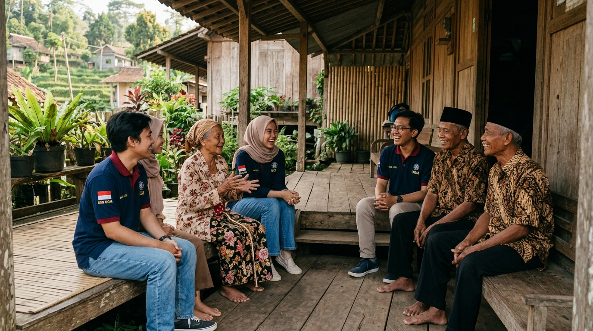
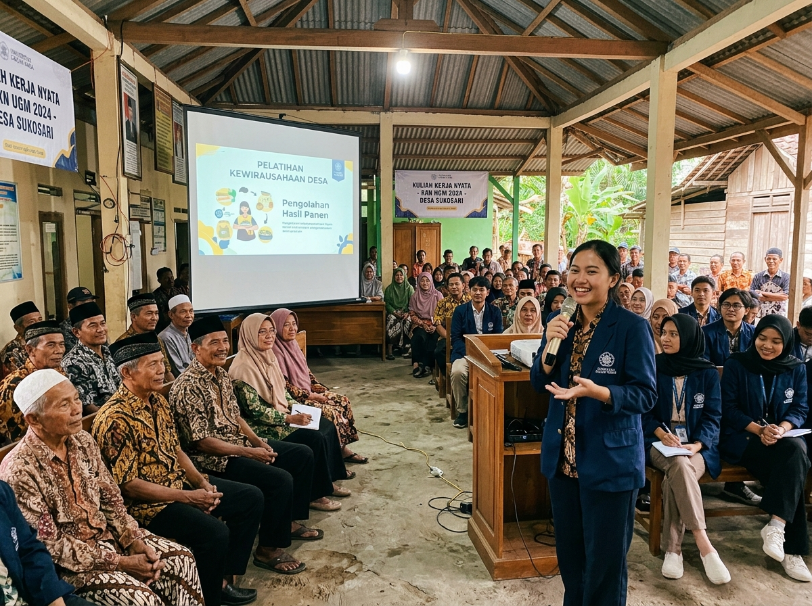
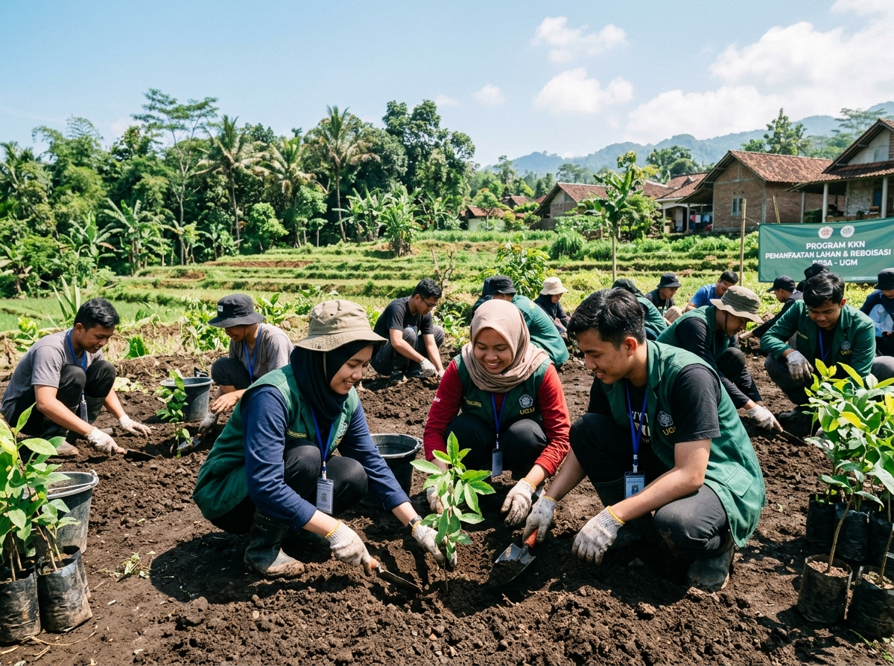

PLK UNY Mengabdi
Bersama Membangun Desa, Menciptakan Perubahan Nyata
PLK UNY Mengabdi adalah program pengabdian kepada masyarakat yang dijalankan oleh mahasiswa untuk memberikan kontribusi nyata melalui ilmu, teknologi, dan kreativitas terpadu di Kalurahan [Nama Desa/Mitra].
Apa itu PLK UNY Mengabdi?
PLK UNY Mengabdi adalah program Kuliah Kerja Nyata yang mengusung semangat kolaborasi, inovasi, dan kreativitas. Kami hadir untuk memberdayakan masyarakat desa melalui kegiatan yang berfokus pada pendidikan, lingkungan, teknologi, dan pemberdayaan ekonomi di Kalurahan [Nama Desa/Mitra].

Pertanian & Ketahanan Pangan
Petak sawah irigasi dan tegalan palawija komoditas unggulan desa yang dikelola bersama Gapoktan.
UMKM & Ekonomi Kreatif
Olahan pangan tradisional dan kerajinan lokal dengan pendampingan kemasan dan titik Google Maps.
Pelayanan Publik & Pemuda
Aktivitas balai kalurahan melayani kependudukan serta forum Karang Taruna dan Posyandu.
Program Kerja
Berbagai kegiatan telah kami laksanakan selama program pengabdian, yang meliputi:

Pendidikan
Pelatihan dan pendampingan untuk meningkatkan kapasitas masyarakat.

Lingkungan
Gerakan penghijauan dan pengelolaan sampah berbasis masyarakat.
Teknologi
Pengenalan teknologi tepat guna untuk mendukung aktivitas warga.
Ekonomi
Pelatihan UMKM dan pengembangan potensi lokal desa.
Galeri Kegiatan
Momen interaksi, pengabdian, dan implementasi program di Kalurahan [Nama Desa/Mitra].
Cuplikan Kegiatan dan Kesaksian Lapangan
Dokumentasi video resmi pelaksanaan 272 jam pengabdian dan kesaksian warga Kalurahan [Nama Desa/Mitra].
Sematkan iframe YouTube resmi atau video player di sini saat video final selesai diproduksi.
Sepuluh Mahasiswa Pengabdi
Kolaborasi lintas 4 disiplin ilmu Universitas Negeri Yogyakarta untuk Kalurahan [Nama Desa/Mitra]